39th SEANET Convention

Brunei Darussalam
17.Nov-21.Nov.2011
|
◎ 39th・SEANET CONVENTION 2011 2011年11月17日-21日の5日間、恒例のSEANET・CONVENTIONが開催されました。 第39回目を迎えた今回の開催地はV8・ブルネイ(Brunei・Darussalam)国。 「SEANET・Convention」がブルネイで開催されるのは1999年以来の12年ぶりとなります。 ボルネオ(Borneo)島の西海岸(南シナ海側)に位置し、陸続きの東マレーシアのサラワク(Sarawak)州に囲まれたブルネイ・ダルサラーム国は、石油で潤う王国で、あのビル・ゲイツに抜かれるまで「世界一のお金持ち」はブルネイの国王でした。 ギネスブックにもランクされ、国王の住む王宮の建設費は5400億円かかったともいわれています。 贅沢な生活をする国王に、国民はさぞかし搾取されて貧乏な生活を強いられているのでは…と考えられてしまいますが、 国民の平均収入は少なくても個人所得税はなく、公共料金は安く、住宅ローンの金利も低く、一家に車が2台はあると言うほど生活水準の高い国です。 ◎ SEANET CONVENTION 受付 今回は日本からの16人を含め、米国、オーストラリア、ドイツ、セルビア、スイスなど諸外国から約90人が参加、地元ブルネイの参加者を含めると150人を超える盛会となりました。 SEANETの受付が行われたホテル(Centrepoint Hotel)の7階に特別記念局・V84SEAが設置されていました。RIGはFT-950と"スパイダービーム"。
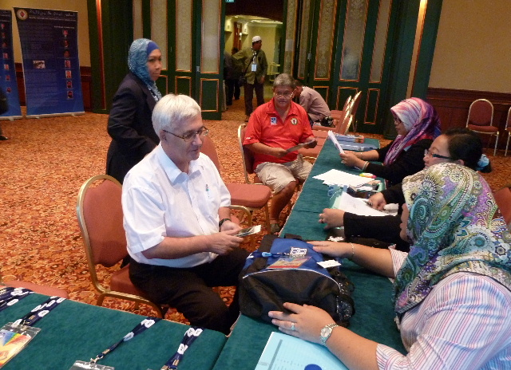 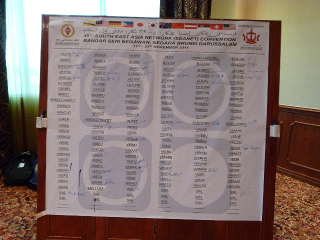 受付の横には参加者全員の"サインボード"が置かれていた V84SEA 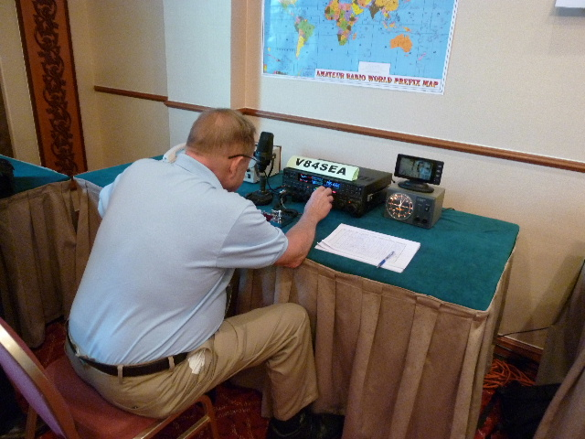 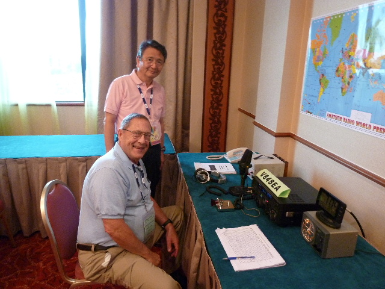 記念局を運用するAI6V・Carl(左)、後ろはJA1BRK・米村さん
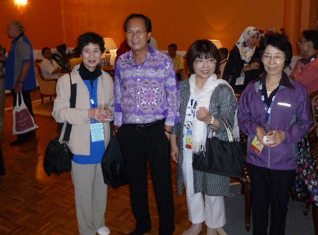 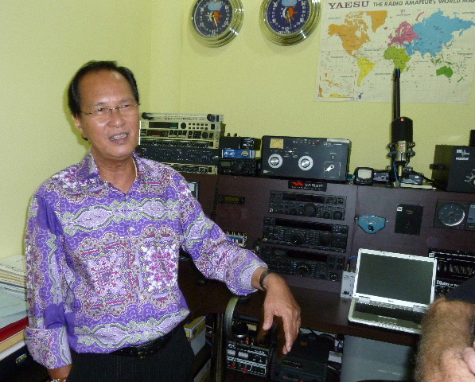 初日の夜は地元BDARAの会長・V85DXの豪邸でディナー/V85DXのシャック 日本から"単身"参加の女性陣。左から7K3EOP、V85DX、JL1XWR、JF1WMYの各局
◎ THE 2011 SEANET PROGRAMs
Date Time(LMT) Events Venue/Remarks
------------------------------------------------------------------------------------------
17th November 09:00-22:00 Registration Jade Room,Centrepoint Hotel
(Thursday) 19:30-22:00 Dinner BDARA Chairman residence(V85DX）
------------------------------------------------------------------------------------------
06:00-08:00 Breakfast Seasons Restaurant,Centrepoint Hotel
09:00- OPENING CEREMONY Goldstone Ballroom,Centrepoint Hotel
12:00-13:30 FRIDAY PRAYER JAME'ASR HASSANAL BOLKIAH MOSQUE
18th November 14:00-17:00 GROUP PHOTO WATERFRONT/YAYASAN
(Friday) Water Village
(Kampong Ayer Tour) KAMPONG BAKUT BERUMPUT
water village experience, Brunei
traditional culture & delicacies.
19:30- WELCOMING DINNER RMS PORT VIEW RESTAURANT
------------------------------------------------------------------------------------------
06:00- Breakfast Seasons Restaurant,Centrepoint Hotel
19th November 08:30- Departure on bus
(Saturday) HEART OF BORNEO ULU TEMBURONG NATIONAL PARK
19:30-23:00 GALA NIGHT Goldstone Ballroom,Centrepoint Hotel
-------------------------------------------------------------------------------------------
07:00-08:00 Breakfast Seasons Restaurant,Centrepoint Hotel
20th November 09:00-12:00 PLENARY MEETING Goldstone Ballroom,Centrepoint Hotel
(Sunday) 12:00-13:00 Lunch Grand View Garden Restaurant
12:00-14:00 FAREWLL LUNCH Seasons Restaurant,Centrepoint Hotel
--------------------------------------------------------------------------------------------
07:00-08:00 Breakfast Centrepoint Hotel
21th November 08:00-12:00 Sight Seeing * Royal Regalia Building
(Manday) Golf * Sultan Omar Ali Saifuddien Mosque
(Own expenses and transportation provided)
-------------------------------------------------------------------------------------------
◎ "OPENING CEREMONY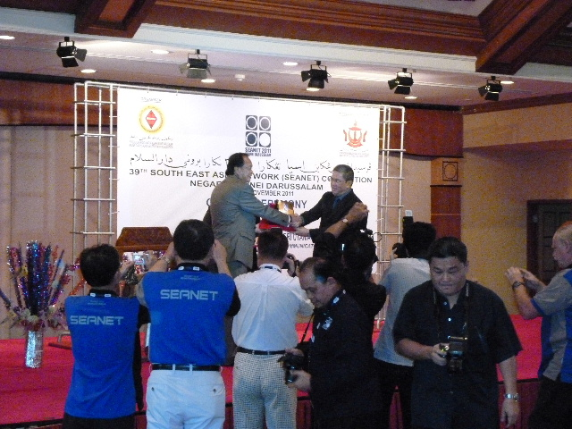 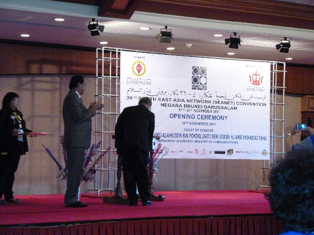 ドラの音を合図に2011 SEANET CONVENTIONの開始。
◎ "水上集落"を"水上タクシー”で巡るツアー
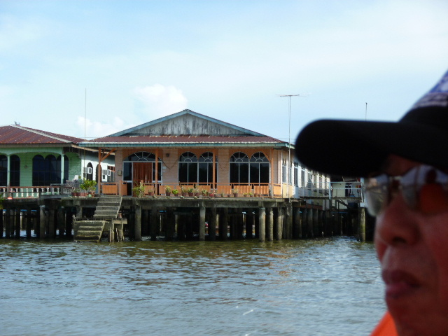 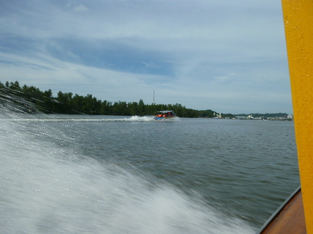
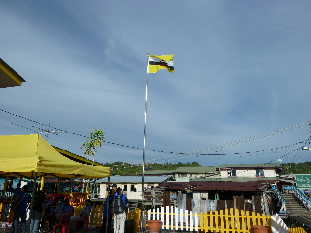 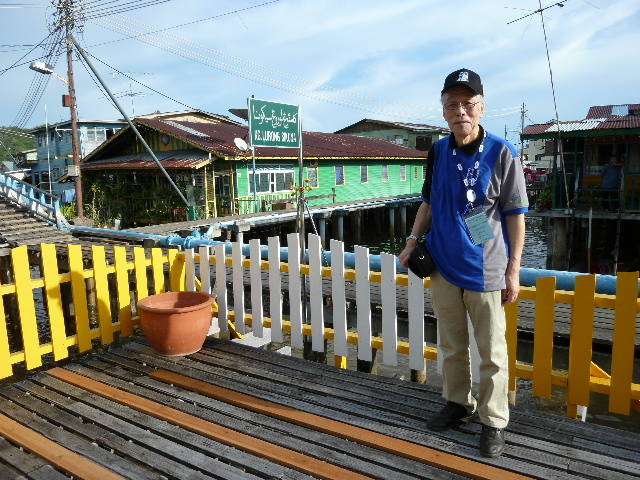 ブルネイ川沿いには600年の歴史を持つ「水上集落」が。
◎ 「GALA NIGHT」(晩餐会) 恒例になっている各国の出席者が民族衣装で参加する「GARA・NIGHT」のパーティーで注目を集めたのは韓国勢でした。 中でも韓国王朝時代の”王様”の衣装で参加したKDXC(Korean DX Club)会長のHL1IWD・Leeさんと、 韓国の花嫁衣装で参加したXYL(KI6SNP)のKimさんには、各国の参加者のカメラのフラッシュが集中していました。 晩餐会は、参加各国がアルファベット順に紹介され、オーストラリアを皮切りに自国の特徴あるポピュラーソングが、各国から披露されました。 ここでも圧倒的な存在感を示したのは韓国勢でした。韓国舞踊や歌、プロ並みのアルトサックスの演奏などで会場からは大きな拍手を受けていました。 日本のグループはSEANETでは毎度お馴染みになっていると「上を向いてあるこう」と今回は「花」の2曲を全員で合唱。
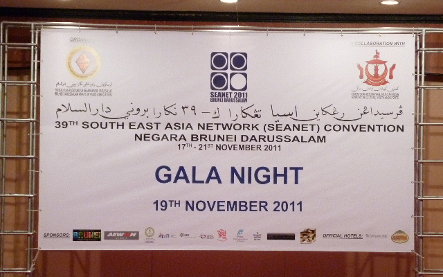
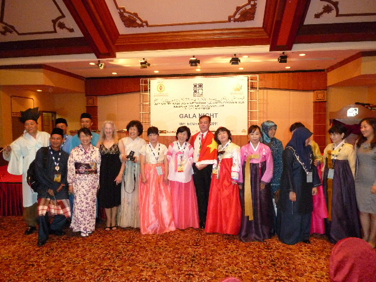 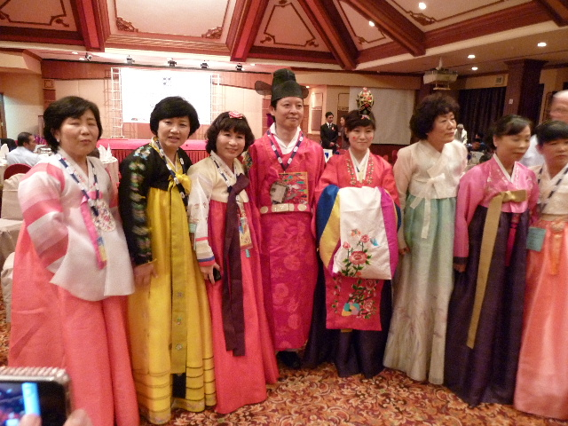
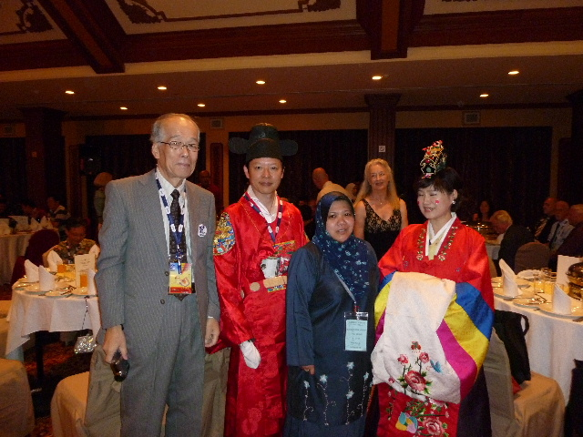 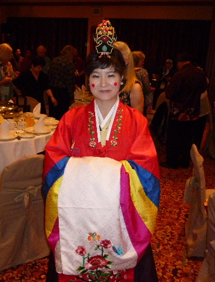 韓国王朝時代の衣装で人気を集めたHL1IWD・Lee、Kimさんご夫妻
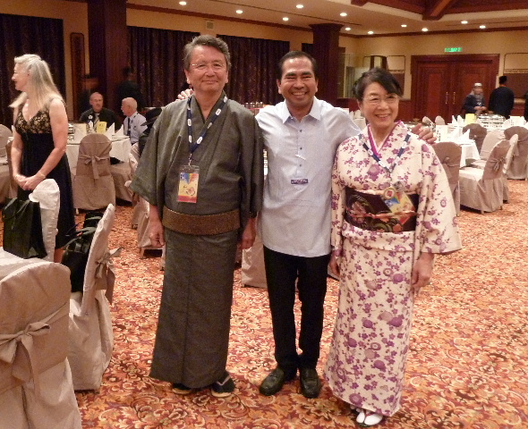 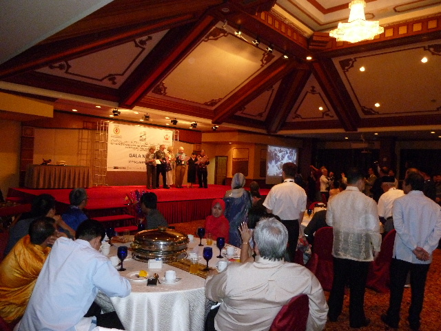 左からJA1BRK、DU1EV、JR1FBE/各国のパフォーマンスを楽しむ
◎ FCCの資格試験 今年も現地でFCCの試験を行い、今回は9M6DXXとV85DBの2名の受験生がありました。 試験官は4名と"余裕"のある試験でした。 関係者の写真はパーティー会場で撮りましたので、こんな格好になりました。 左からN9EV(DU1EV).W1BRK(JA1BRK).9M6DXX.V85DB.AH2Y(HL1IWD).KH2K(JA1RJU)。 右は採点中のAH2Y(HL1IWD)。 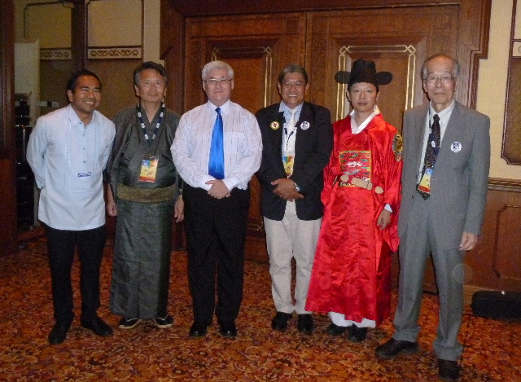 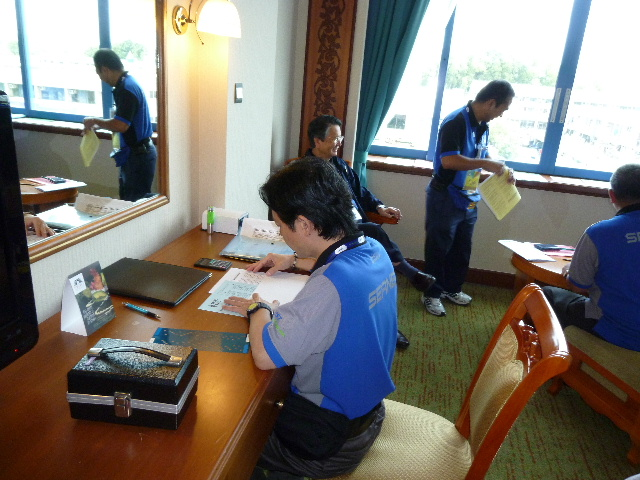 次回の第40回SEANET Convention 2012はマレーシアのクアラルンプール(Kuala Lumpur)で開催される事が決定しています。 次期開催地のクアラルンプールに"フラッグ"の引継ぎが行われ、ブルネイ代表
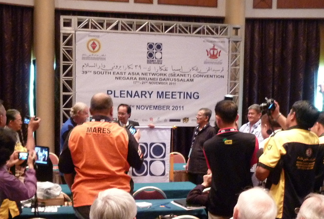
◎ 東マレーシアのコタ・キナバル(Kota Kinabalu)から9M6JUを運用
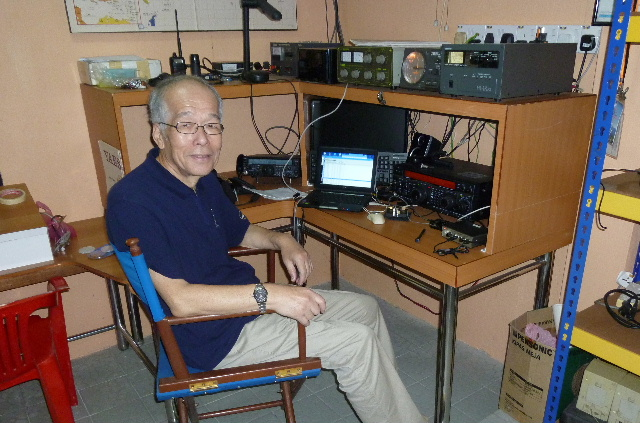 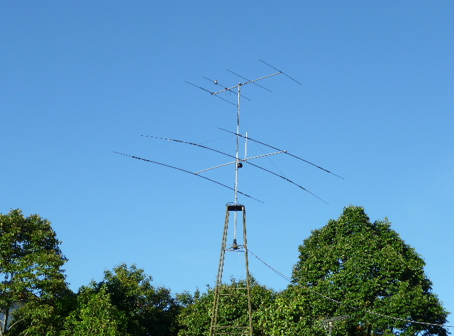 9M6GYのシャックから9M6JUを運用/6mのアンテナは4EL・HB9CV
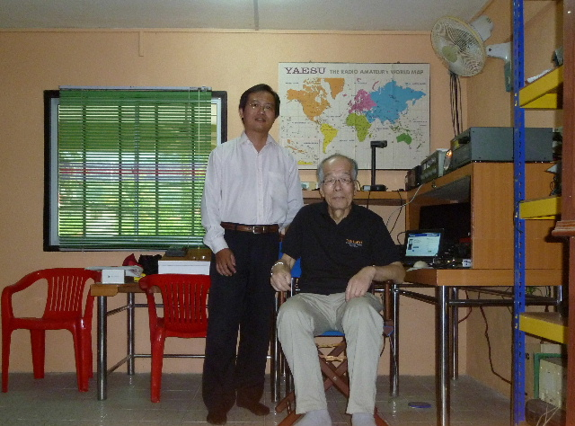 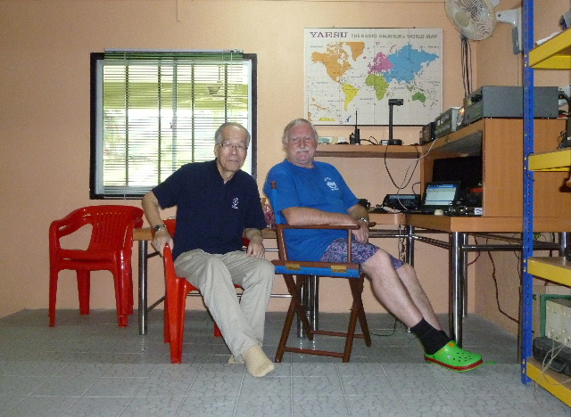 6mでQSO後にシャックを訪れた9M6YBG(左)/DF5UG=9M2QQ(右)
2011 Brunei Darussalam |
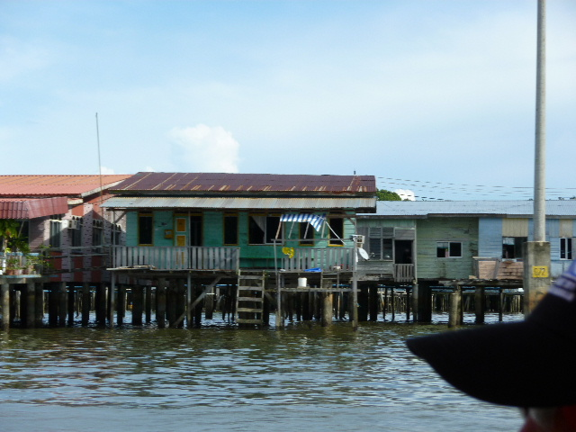 |
Eye Ball Album |